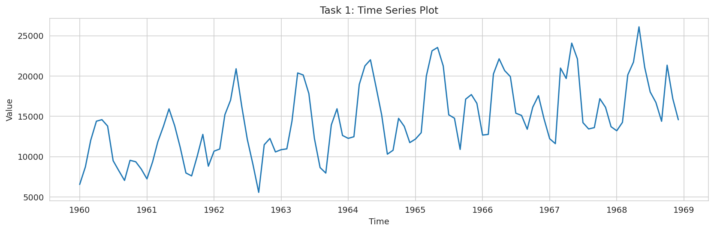
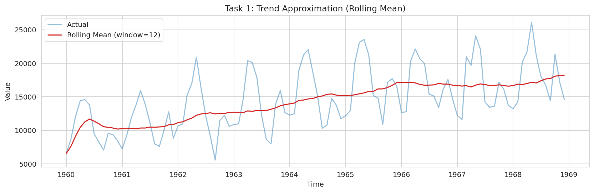
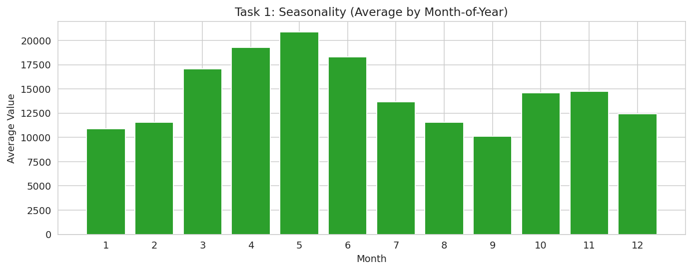
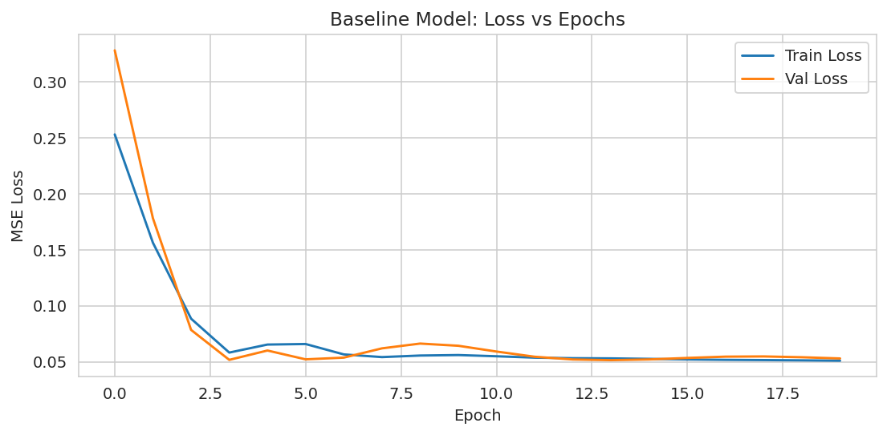
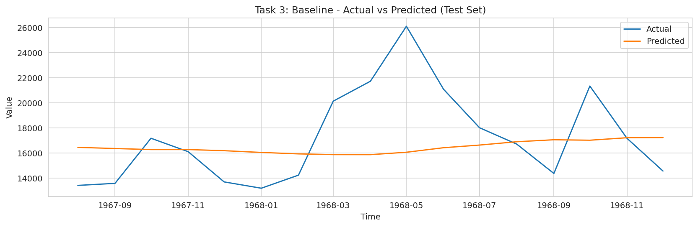
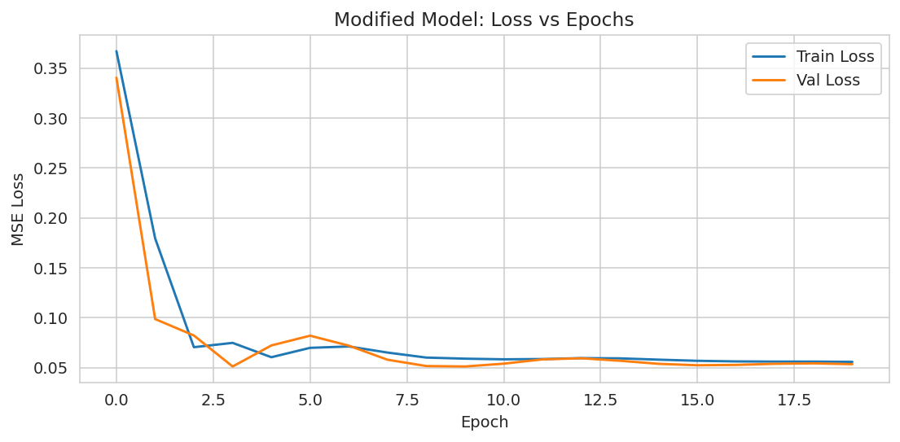
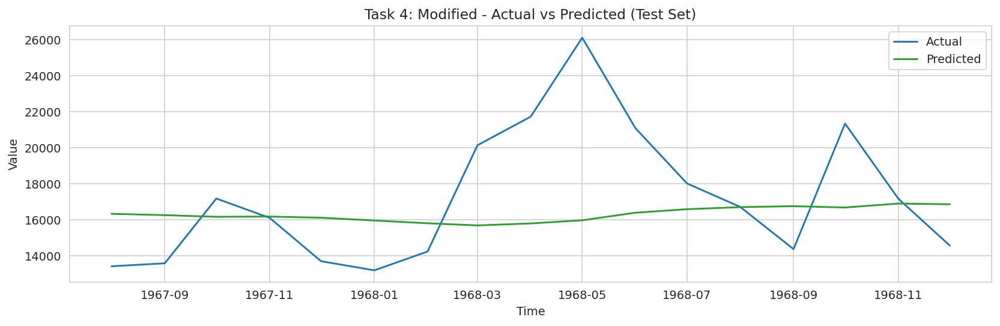
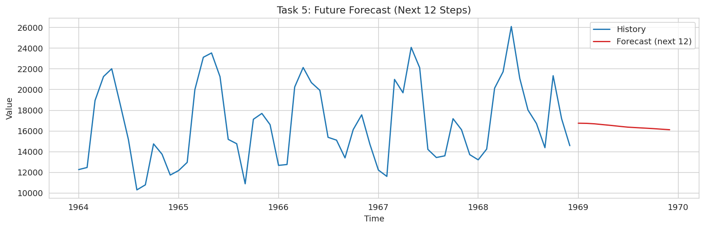

COMP-341L — Artificial Neural Networks Lab
Abstract— This lab implements LSTM-based time series forecasting (regression) using a univariate sales sequence. The time series is inspected for trend and seasonality using visual plots, normalized using Min–Max scaling, and transformed into supervised samples using a sliding window. Two LSTM configurations (baseline and modified) are trained for 20 epochs and compared using training/validation MSE loss. Finally, the trained model is used to forecast the next 12 time steps using iterative prediction.
Keywords— Time Series Forecasting, LSTM, Sliding Window, Regression, Trend, Seasonality.
Month, detected value column = Sales, samples (after cleaning) = 108.
In time series data, the ordering of samples is critical because each observation depends on previous ones. A time series can often be viewed as a combination of trend, seasonality, and noise. Visual inspection helps confirm whether repeating seasonal patterns exist and whether the mean level changes over time (trend).



The values are normalized using MinMaxScaler. The scaler should be fit on the training portion only to avoid leakage
of future information into the training process. The sequence is then transformed into supervised samples using a sliding window.
# Given a scaled series: values_scaled shape (N, 1)
# Create supervised samples: (x[t-window : t]) -> x[t]
def make_windowed_dataset(values_scaled, start, end, window):
X, y = [], []
for t in range(start + window, end):
X.append(values_scaled[t-window:t, 0])
y.append(values_scaled[t, 0])
X = np.array(X).reshape(-1, window, 1)
y = np.array(y).reshape(-1, 1)
return X, yThis step is crucial because the LSTM does not learn from raw unordered points; it learns from sequences of fixed length. The chosen window size is a tradeoff: small windows may miss long-term patterns, while large windows can increase training difficulty and overfitting risk.
12, LSTM units = 50, dropout = 0.0, epochs = 20.
The baseline model is a single-layer LSTM followed by a dense output neuron (Dense(1)) for regression. The model is optimized with Adam and trained using MSE loss.
model = Sequential([
LSTM(50, input_shape=(12, 1)),
Dense(1)
])
model.compile(optimizer="adam", loss="mse")

24, LSTM units = 100, dropout = 0.0, epochs = 20.
The modified model increases the temporal context (window length) and the number of LSTM units. Increasing the window helps the model see a longer history, while more units increase capacity to represent complex patterns. However, these changes can also increase the risk of overfitting if the dataset is small.


| Model | Window | LSTM Units | Dropout | Train Loss (final) | Val Loss (final) |
|---|---|---|---|---|---|
| Base | 12 | 50 | 0.0 | 0.050946 | 0.052949 |
| Modified | 24 | 100 | 0.0 | 0.055747 | 0.053419 |
Discussion: Here, the baseline shows slightly lower validation loss than the modified model, suggesting that the added capacity/context did not improve generalization for this dataset. This can happen when the dataset size is limited or when the longer window introduces noisier inputs.
Future forecasting is performed iteratively: the prediction for the next time step is appended to the sequence and then used as part of the input for predicting subsequent steps. This procedure is common in one-step-ahead models extended to multi-step forecasting.
# Use last "window" points, predict next, append prediction, repeat
history_scaled = values_scaled[:, 0].tolist()
future_scaled = []
for _ in range(12):
x = np.array(history_scaled[-24:]).reshape(1, 24, 1)
yhat = float(mod_model.predict(x, verbose=0)[0, 0])
future_scaled.append(yhat)
history_scaled.append(yhat)
This lab demonstrates an end-to-end LSTM forecasting workflow for time series regression. The time series was analyzed for trend and seasonality, normalized, and transformed into supervised samples using a sliding window. A baseline LSTM model and a modified model (changing window size and units) were trained and compared using training and validation MSE loss.
The results show that increasing the window size and LSTM units does not guarantee improved validation performance; the best configuration depends on the dataset size, noise level, and strength of temporal patterns. In practice, model selection should be guided by validation error and careful testing on unseen future segments.
Future work: add dropout, try stacked LSTMs, use early stopping, and incorporate multivariate features (promotions/holidays) to improve forecasting robustness.